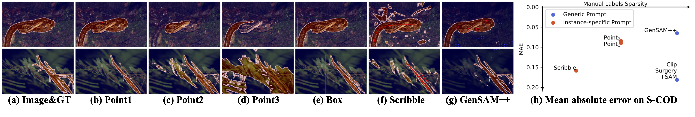

Framework

Promptable Segmentation approaches like the Segment Anything Model (SAM) exhibit superior generalization ability thanks to extensive training on large-scale annotated masks. However, it relies upon instance-specific manual prompts to guide for segmenting interested targets. Manual prompt can be categorized as visual or text prompts, with the former only providing localization information instead of semantic information, while the latter is the opposite. Both of them can cause ambiguity in interpreting the targets. Additionally, manual prompts may not be always accessible in real-world application. In this work, we aim to eliminate the need for manual prompt. The key idea is to employ a Progressive Task Control (PTC) to gradually control the visual prompts generation, using the semantic information given by a task generic text prompt. To that end, we introduce a test-time adaptation mechanism called Generalizable SAM++ (GenSAM++) to automatically generate and optimize visual prompts. In particular, PTC first maps a task-generic text prompt onto image-specific consensus foreground and background heatmaps using vision-language models, acquiring reliable visual prompts for segmentation. Then the consensus heatmaps are iteratively reweighted on the input image, controlling the model to focus on the targets in a coarse-to-fine manner. Crucially, GenSAM++ is training-free and test-time optimized.


placeholder